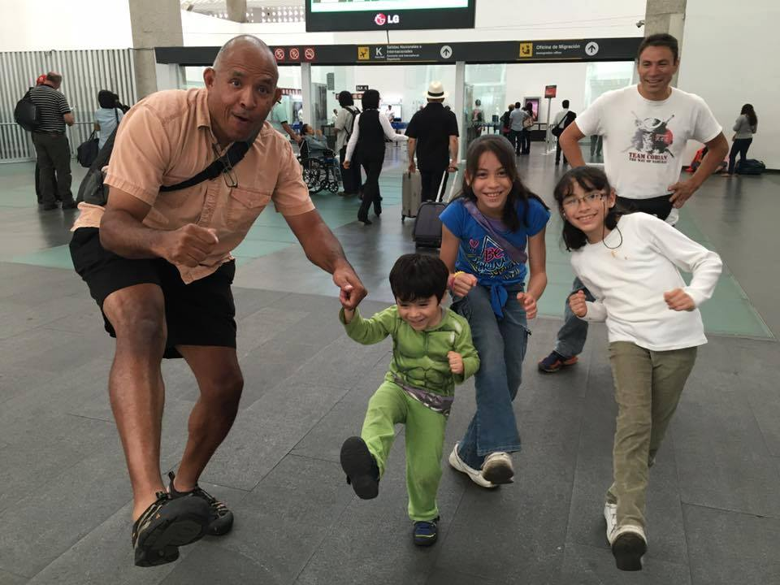

Trabajo con civiles

Aquí estoy en 2016 con el anfitrión del seminario y sus hijos, realizando una patada oblicua que acababan de aprender.
En este artículo, me gustaría ofrecerle una idea de cómo trabajo con ciudadanos comunes en la enseñanza y el entrenamiento de artes marciales y defensa personal. Lo hago desde dos perspectivas:
- Personas — en sus hogares y lugares de trabajo
- Grupos — en seminarios, hogares y lugares de trabajo
Personas
Cuando alguien se pone en contacto conmigo por teléfono o correo electrónico, converso con esa persona y le pregunto: «¿Cómo puedo ayudarle?». Permítame darle un ejemplo.
Un alumno de Jiu Jitsu de poco más de 50 años me escribió para pedirme ayuda con el fin de reducir las lesiones y disfrutar más de sus entrenamientos en su academia. Hablamos largo y tendido sobre el problema. Después de escuchar algunos de los problemas específicos a los que se enfrentaba, le propuse varios conceptos para que los tuviera en cuenta. Luego, lo invitaré a viajar a San Diego para entrenar conmigo de forma individual y, quizá, aprovechar para ir de compras y hacer un poco de turismo con su esposa. Un par de meses después, aceptó la invitación. Esto es un pequeño adelanto de lo que ocurrió.
Cuando llegó, le dije: «Primero, debemos comenzar con algunos fundamentos. Estos fundamentos tienen muy poco que ver con la «TÉCNICA». En realidad, tienen todo que ver con sentar unas bases para que, más adelante en su trayectoria, pueda empezar a construir algo personal que funcione de manera eficaz para usted; es decir, para su tipo de cuerpo, su personalidad, sus fortalezas actuales, sus debilidades, sus lesiones, etc.»
A continuación, como su principal preocupación era escapar desde la posición inferior del control lateral, quería que experimentara aquello que estaba a punto de enseñarle. Así que le pedí que se colocara en control lateral e intentara controlarme. Mientras tomaba la posición, adopté el posicionamiento defensivo de Harris Jiu Jitsu, sin utilizar ninguna postura.
Con todo su peso sobre mí y los brazos colocados en posición, comenzó a forcejear y a gruñir por el esfuerzo. Intentaba establecer un control superior al 90 %, pero, debido a mi posicionamiento defensivo, solo conseguía aproximadamente un 40 % de control. Como resultado, pasó del control lateral a la posición de kesa-gatame, y yo cambié del posicionamiento defensivo para el control lateral al posicionamiento defensivo para kesa-gatame. Al no poder aumentar su nivel de control, volvió al control lateral, donde yo lo esperaba con otra ronda de posicionamiento defensivo. Después intentó pasar a la posición norte-sur, pero se lo impedí. Luego trató de regresar a kesa-gatame y escapé, colocándolo de espaldas.
En pocas palabras, él estaba cansado y respiraba con dificultad, mientras yo seguía sonriendo y relajado. Cuando vio aquello, ¡por fin estaba preparado para aprender qué acababa de suceder!
Al terminar la clase, ¡era un cliente muy satisfecho! Aunque había pagado por 60 minutos de mi tiempo, le dediqué casi 80 minutos.
Tres semanas después, me envió por correo electrónico un informe sobre sus progresos y sus experiencias al aplicar la nueva información en su academia habitual, ubicada en otro estado. Me dijo: «¡La nueva información funcionó a la perfección y ahora los demás alumnos me preguntan por ella!»
Grupos
Un instructor me escribió para pedirme que impartiera un seminario en su academia. Quería que el tema del seminario fuera algo único, así que decidí llamarlo «¡La única cosa!». Quería despertar la curiosidad de los alumnos sobre el tema… ¡y vaya si lo conseguí!
Al comenzar el seminario, declaré: «Hoy voy a intentar dejarles con la boca abierta. Van a aprender... ¡LA ÚNICA COSA! Y esto es lo que haremos: aprenderán LA ÚNICA COSA para pasar la guardia, LA ÚNICA COSA para controlar desde la posición lateral y LA ÚNICA COSA para aplicar llaves de brazo desde el control lateral.
«Ahora bien, esta ÚNICA COSA no les dará todo lo que buscan. Más bien, les proporcionará entre el 60 y el 70 % de lo que buscan. Y, como verán, esta única cosa resolverá muchos de los problemas relacionados con esos tres temas.
«¿Están preparados?»
Y, dicho esto, comencé el seminario.
Cerca del final del seminario, pedí a los alumnos que pusieran a prueba la información mediante un poco de sparring ligero entre ellos. Lo que ocurrió hizo muy felices a muchos alumnos... aunque algunos no quedaron tan contentos.
¿Por qué?
Bueno, póngase en mi lugar. Esto es lo que habría visto:
- Cinturones blancos pasando la guardia de cinturones morados.
- Cinturones azules inmovilizando a cinturones marrones.
Cerca del final del seminario, dije: «Basándose en lo que les he mostrado hoy, ¿ven ahora que NO SE TRATA de la técnica? ¿Ven que se trata de algo diferente? ¿Y ven ahora cómo he simplificado ciertos aspectos del Jiu Jitsu para que sean más fáciles de recordar, más agradables y más eficaces?»
Al terminar el seminario, uno de los asistentes dijo: «Esta información ha sido excelente, pero ¿puede responderme una pregunta?»
Respondí: «Claro.»
Me preguntó: «¿Puede compartir conmigo la UNICA COSA para los estrangulamientos con solapa; la UNICA COSA para las llaves de pierna; la UNICA COSA para los barridos; la UNICA COSA para controlar desde la montada; la UNICA COSA para controlar desde la posición lateral; y así sucesivamente?»
¡Muchos de los que estábamos en el seminario nos echamos a reír con aquella pregunta!
Si usted o su academia están interesados en trabajar conmigo, envíeme un correo electrónico a la dirección que aparece a continuación y hablemos.
Gracias por su tiempo,
Roy
Teléfono: 1-98-98-HARRIS
Correo electrónico: roy@royharris.com